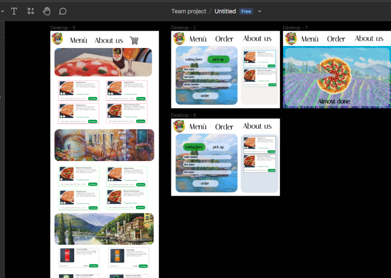

The Portfolio
LEARNING OUTCOMES
Technical Skills
Advanced: Iterative process
Feedback is always important. Whether it positive or negative. It can help you improve a project or improve yourself for your next job. Not only does it help you but also the user. When i had user test my sites they always tell me “make it smaller” or “add this so i can move around quicker”. There is always something to add that would help the user experience.
For example my portfolio I had gotten a feedback to scale it a little smaller so that it would look more like a newspaper, and they were right. Any feedback helps.
Advanced: Interactive prototypes
First thing I was taught at Fontys is to always make a sketch first. Either a paper prototype or a wireframe, always start with a prototype because it could be improved. For every project I ever did i always make a wireframe to start. Helps me set an idea and also helps others to understand what you want to do and could give you feedback. Here you can see some of my prototypes i could find:

Orientation: Target group
Making a website for a specific topic can be difficult. Asking for feedback is essential, Find their interest what they want and need. Compare your project with other similar projects or works.
see what else you could add or change. And always staying open for users needs.